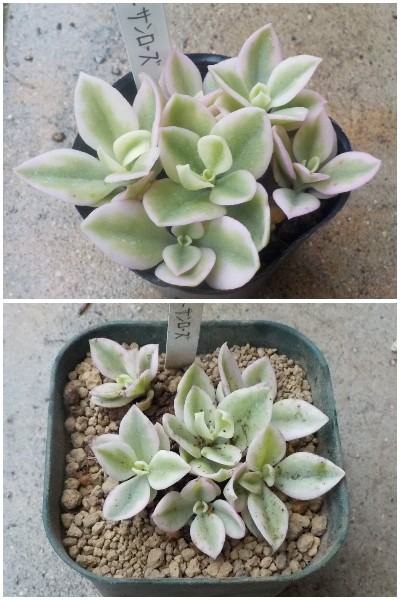

見た目が可愛いいのでベビーサンローズを買いました。
更新日 : 2026/10/25

買った時点で窮屈そうだったので、すぐに植え替えしました。小さい葉っぱが可愛いですね。
小さいのがいいんですが、育つと背が伸びる見たいですね。
どう育つか分かりませんが、大きくなってから考えることにします。
更新日 : 2026/10/25

買った時点で窮屈そうだったので、すぐに植え替えしました。小さい葉っぱが可愛いですね。
小さいのがいいんですが、育つと背が伸びる見たいですね。
どう育つか分かりませんが、大きくなってから考えることにします。
上に伸びないともっと可愛いのにね。小さいままがいい気がする。